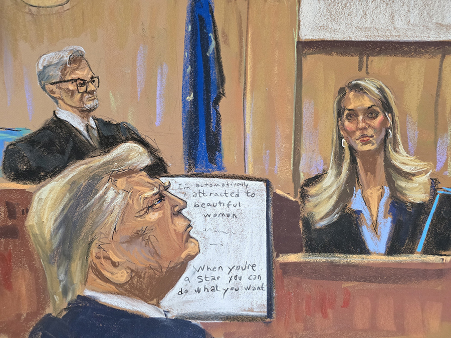
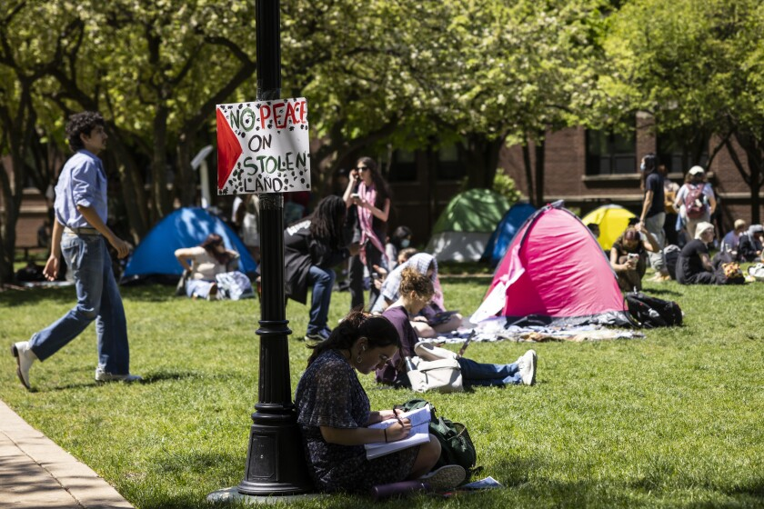
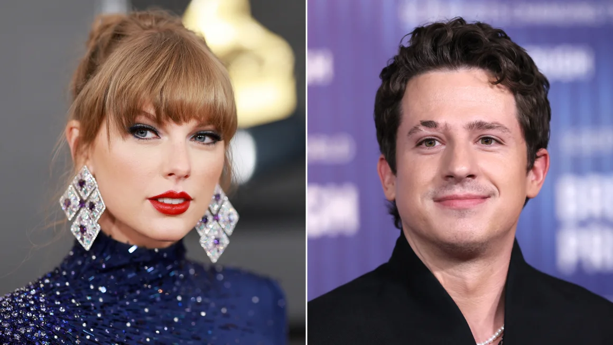

Biggest takeaways from trump's hush money trial so far

Witnesses didn't have nice things to say about Michael Cohen, Hope Hicks describes 'Access Hollywood' tape crisis and more highlights
Fact check:Another week, another round of false Trump
OpinionHope Hicks' testimony was a nightmare for Trump
Reporter says this moment made Hicks realize she could have sunk Trump's defense * 2:16
Fact check:Trump made at least 32 false claims in the interviews that Time released last week. Here is CNN's de-bunking.

Police tactics at campus protests reveal disparities in approaches to public order
Live Updades:Chicago police are on DePaul's campus to help manage large protest, University says
Columbia University's encampment ended with a mass police operation. Here's how some schools avoided that
'I'll tell you what ain't free - Columbia!': Kenan Thompson takes on protests in 'SNL' cold open
Map: Where University protesters have been arrested across the United States
Dua Lipa deep-dives into Drake and Kendrick Lamar 'beef' in 'SNL' sketch
Dua Lipa is connecting the dots on the latest round of “diss tracks” to come from rappers Drake and Kendrick Lamar during a wild “Saturday Night Live” sketch.
In her hosting debut over the weekend, Lipa dove deep into the “beef” while playing a local culture critic named Wanda Weems during a “Good Morning Greenville” sketch.
“Y’all, these diss tracks are getting insane,” Lipa said, appearing in front of a map of photos showcasing Drake and Lamar connected by red yarn pinned to the wall behind
Watch the latest CNN Headlines

Taylor Swift appears to be Charlie Puth’s ‘Hero’ in just-dropped track
Valerie Bertinelli says Eddie Van Halen was ‘not a soulmate’
Ryan Gosling wishes he could redo this memorable scene in ‘La La Land’
Mariska Hargitay addresses Harvey Weinstein’s overturned conviction in powerful speech about the power of women’s voices
Drew Carey is never quitting ‘The Price Is Right’
Britney Spears ‘home and safe’ after paramedics responded to an incident at the Chateau Marmont, source says